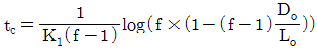
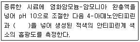
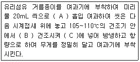

수질환경산업기사 (2008-05-11 기출문제)
1과목: 수질오염개론
1. 호수에서의 부영양화현상에 관한 다음 설명 중 잘못된 것은?
- 질소, 인 등 영양물질의 유입에 의하여 발생된다.
- 부영양화에서 주로 문제가 되는 조류는 남조류이다.
- 성층, 전도현상에 의하여 부영양화가 촉진된다.
- 조류제거를 위한 살조제는 주로 KMnO4를 사용한다.
(정답률: 73%)

2. Glucose(C6H12O6) 300mg/L 용액의 이론적 COD값은?
- 320mg/L
- 360mg/L
- 420mg/L
- 460mg/L
(정답률: 알수없음)
3. 다음중 물이 가지는 특징 중 틀린 것은?
- 고체인 경우 수소결합에 의해 육각형 결정구조를 가진다.
- 물은 광합성의 수소공여체이다.
- 물의 융해열은 유사 화합물에 비해 작아 고체에서 액체로 되기 쉽다.
- 모세관 현상과 관계있는 표면장력은 72.75dyne/cm(20℃)이다.
(정답률: 알수없음)
4. 어떤 폐수의 분석결과 COD가 400mg/L이고, BOD5가 300mg/L였다면 NBDCOD는? (단, 탈산소계수 K1=0.2/day, base는 상용대수)
- 33.7mg/L
- 44.7mg/L
- 55.7mg/L
- 66.7mg/L
(정답률: 알수없음)
5. BOD 2ppm, 유량이 15,000m3/day인 소규모 하천에 처리용량 125m3/hr인 하수처리장 방류수가 유입되고 있다. 하천수와 하수처리장 방류수가 합류되는 지점의 BOD 농도를 5ppm 이하로 유지시키기 위해서는 하수처리장 방류수의 최대 BOD 농도는 몇 ppm인가?
- 20
- 25
- 30
- 35
(정답률: 알수없음)
6. [기체의 확산속도(조그마한 구멍을 통한 기체의 탈출)는 기체 분자량의 제곱근에 반비례한다.]라고 표현되는 기체확산에 관한 법칙은?
- Dalton의 법칙
- Graham의 법칙
- Gay-Lussac의 법칙
- Charles의 법칙
(정답률: 알수없음)
7. 30,000m3/day 상수를 살균하기 위하여 30kg/day의 염소가 주입되고 있는데 살균 접촉 후 잔류염소는 0.2mg/L이다. 염소 요구량(농도)은?
- 0.3mg/L
- 0.4mg/L
- 0.6mg/L
- 0.8mg/L
(정답률: 알수없음)
8. ‘동점성계수’의 단위로 적절한 것은?
- cm2/sec
- g/cmㆍsec
- gㆍcm/sec2
- cm/sec2
(정답률: 알수없음)
9. Ca2+농도가 300mg/L일 때 이것은 몇 meq/L가 되는가? (단, Ca 원자량=40)
- 5
- 10
- 15
- 20
(정답률: 알수없음)
10. 증류수 50mL에 NaOH 0.1g을 녹이면 pH는? (단, NaOH의 분자량은 40이고, 완전해리한다.)(오류 신고가 접수된 문제입니다. 반드시 정답과 해설을 확인하시기 바랍니다.)
- 9.7
- 10.7
- 11.7
- 12.7
(정답률: 알수없음)
11. 표준상태에서 90g의 포도당(C6H12O6)이 혐기성 분해시 이론적으로 발생시킬 수 있는 CH4 가스의 부피는?
- 22.4 L
- 33.6 L
- 44.3 L
- 88.6 L
(정답률: 알수없음)
12. Mg(OH)2의 용해도적이 1.1×10-11이면 Mg(OH)2의 용해도(g/L)는? (단, Mg(OH)2의 분자량은 58.3이다.)
- 8.47×10-5
- 8.47×10-3
- 8.17×10-5
- 8.17×10-3
(정답률: 알수없음)
13. 1차 반응에 있어 반응 초기의 농도가 100mg/L이고, 반응 4시간 후에 10mg/L로 감소되었다. 반응 1시간 후의 농도(mg/L)는?
- 24.9
- 31.6
- 44.7
- 56.2
(정답률: 알수없음)
14. 어느 하천의 DO가 7.3mg/L, BODu가 17.1mg/L이었다. 이때 용존산소곡선(DO Sag Curve)에서 임계점에 달하는 시간은? (단, 온도는 20℃, 용존산소 포화량 9.2mg/L, K1=0.1/day, K2=0.3/day,

, f=K2/K1)- 1.32일
- 1.85일
- 2.32일
- 2.64일
(정답률: 알수없음)
15. 산성비를 정의할 때 기준이 되는 수소이온농도(pH)는?
- 4.3
- 4.5
- 5.6
- 6.3
(정답률: 알수없음)
16. 70g의 Mg(HCO3)2와 화학적으로 같은 당량이 되기 위해서 필요한 CaO(g)의 양은? (단, Mg=24.3, Ca=40이다.)
- 16.7
- 19.6
- 26.8
- 29.5
(정답률: 알수없음)
17. 수질오염에 관한 미생물의 작용에 있어서 흔히 사용되는 조류(Algae)의 경험적 화학 조성식은?
- C5H7O2N
- C5H8O3N
- C5H7O3N
- C5H8O2N
(정답률: 알수없음)
18. 어떤 폐수의 BOD5가 100mg/L이고, 10을 밑으로 한 탈산소계수(K1)가 0.1/day라면 3일 BOD3 및 BODu는?
- BOD3 : 64mg/L, BODu : 133mg/L
- BOD3 : 73mg/L, BODu : 146mg/L
- BOD3 : 64mg/L, BODu : 153mg/L
- BOD3 : 73mg/L, BODu : 162mg/L
(정답률: 알수없음)
19. Wipple의 하천의 생태변화에 따른 4지대 구분 중 ‘분해지대’에 관한 설명으로 알맞지 않은 것은?
- 오염에 잘 견디는 곰팡이류가 심하게 번식한다.
- 유기물을 다량 함유하는 슬러지의 침전이 많아지고 용존산소량이 크게 줄어드는 대신에 탄산가스의 양은 증가한다.
- 희석이 덜 되는 작은 하천에서 더 뚜렷이 나타난다.
- 아질산염이나 질산염의 농도가 증가한다.
(정답률: 알수없음)
20. 0.0001M의 NaCl용액의 농도(ppm)는? (단, NaCl 분자량 : 58.5)
- 5.85
- 58.5
- 585
- 5850
(정답률: 알수없음)
2과목: 수질오염방지기술
21. 고형물 농도 10g/L인 슬러지를 하루 480m3 비율로 농축처리하기 위해 필요한 연속식 슬러지 농축조의 면적은? (단, 농축조의 고형물 부하는 2kg/m2ㆍhr로 한다.)
- 100m2
- 150m2
- 200m2
- 250m2
(정답률: 알수없음)
22. 유량이 3000m3/day이고, 포기조의 MLSS가 4500kg이다. F/M비를 0.25로 유지하기 위해서는 유입수의 BOD농도를 얼마로 유입시켜야 되는가?
- 325mg/L
- 375mg/L
- 425mg/L
- 475mg/L
(정답률: 알수없음)
23. 부상조의 최적 A/S비는 0.04, 처리할 폐수의 부유물질 농도는 375mg/L, 20℃에서 5.1atm으로 가압할 때 반송율(%)은? (단, f=0.8, 공기용해도 Sa=18.78mL/L. 20℃기준, 순환방식 기준)
- 약 40
- 약 30
- 약 20
- 약 10
(정답률: 알수없음)
24. 하수고도처리를 위한 단일단계 질산화공정(부유성장식)에 관한 설명으로 틀린 것은?
- BOD/TKN 비가 높아서 안정적인 MLSS 운영이 가능함
- 독성물질에 대한 질산화 저해 방지가 가능함
- 온도가 낮을 경우 반응조 용적이 매우 크게 소요됨
- 운전의 안정성은 미생물 반송을 위한 이차침전지의 운전에 좌우됨
(정답률: 알수없음)
25. 하수 내 함유된 유기물질뿐 아니라 영양물질까지 제거하기 위한 공법인 Phostrip공법에 관한 설명으로 틀린 것은?
- 생물학적 방법과 화학적 방법을 조합한 공법이다.
- 반송슬러지의 일부를 혐기성 상태의 조(槽)로 유입시켜 인을 방출시킨다.
- 유입수의 BOD부하에 따라 인 방출이 큰 영향을 받는다.
- 기존에 활성슬러지 처리장에 쉽게 적용이 가능하다.
(정답률: 알수없음)
26. 어떤 정유 공장에서 최소 입경이 0.009cm인 기름방울을 제거하려고 한다. 부상속도는? (단, 물의 밀도는 1g/cm3, 기름의 밀도 0.9g/cm3, 점도는 0.02g/cmㆍsec, Stoke's 법칙 적용)
- 0.044cm/sec
- 0.033cm/sec
- 0.022cm/sec
- 0.011cm/sec
(정답률: 알수없음)
27. 고도수처리방법에 사용되는 각종 분리막에 관한 설명으로 틀린 것은?
- 역삼투방법의 분리형태는 용해, 확산이다.
- 한외여과의 구동력은 정수압차이다.
- 투석의 구동력은 농도차이다.
- 정밀여과의 막형태는 비대칭 교환막이다.
(정답률: 알수없음)
28. 다음 중 보통 음이온 교환수지에 대해서 가장 일반적인 음이온의 선택성 순서가 바르게 나열된 것은?
- SO42- ＞ I- ＞ CrO42- ＞ Br- > Cl- ＞ NO3- ＞ OH-
- SO42- ＞ I- ＞ NO3- ＞ CrO42- ＞ Br- ＞ Cl- ＞ OH-
- SO42- ＞ I- ＞ CrO42- ＞ Cl- ＞ Br- ＞ NO3- ＞ OH-
- SO42- ＞ I- ＞ NO3- ＞ CrO42- ＞ Cl- ＞ Br- ＞ OH-
(정답률: 알수없음)
29. 표면적 40m2의 급속 사여과지에서 10,000m3의 상수를 처리한 후 20L/m2ㆍsec의 율로 20분간 1회 역세정한다. 1회에 소요되는 역세정 수량은?
- 240m3
- 480m3
- 960m3
- 1820m3
(정답률: 알수없음)
30. 폐수량이 500m3/일이며, SS의 침강속도는 25m/일이다. SS를 90%까지 제거하고자 하면 침전지의 수면적은?
- 18m2
- 22m2
- 27m2
- 32m2
(정답률: 알수없음)
31. 생물학적 인(P) 제거공법인 A/O 공법에 관한 설명으로 틀린 것은?
- 인 제거 성능은 우천시에 저하되는 경향이 있다.
- 표준활성슬러지법의 반응조 전반 20～40% 정도를 혐기반응조로 하는 것이 표준이다.
- 혐기반응조의 운전지표로 산화환원전위를 사용할 수 있다.
- 혐기반응조로 인하여 사상성미생물에 의한 벌킹 가능성이 커진다.
(정답률: 알수없음)
32. A 처리장에 BOD 300mg/L, 유량 1,000m3/day의 폐수와 슬러지 탈수 여액 BOD 500mg/L, 유량 10m3/day을 혼합하여 유입하였을 때 최종 처리되어 방류되는 BOD가 10mg/L이었다. 이때 BOD 제거율은?
- 약 86%
- 약 90%
- 약 93%
- 약 97%
(정답률: 알수없음)
33. SVI가 200일 때의 포기조로의 반송슬러지의 농도는? (단, 유입 SS 고려하지 않음)
- 4000mg/L
- 5000mg/L
- 6000mg/L
- 7000mg/L
(정답률: 알수없음)
34. 1kg의 BOD5를 호기성 처리하는데 0.8kg의 O2가 필요하고, 표면교반기를 통해 전력 1kW로 물에 2.4kg의 O2를 주입할 수 있다. 이 포기조에 유입되는 BOD5부하량이 2400kg/day일 때 요구되는 O2를 공급하는데 필요한 하루의 이론 전력량은?
- 800kW
- 1200kW
- 1600kW
- 2000kW
(정답률: 알수없음)
35. 표준활성슬러지법의 특성과 가장 거리가 먼 것은? (단, 하수도 시설기준 기준)
- MLSS 농도(mg/L) : 1500～2500
- 반응조의 수심(m) : 2～3
- HRT(시간) : 6～8
- SRT(일) : 3～6
(정답률: 알수없음)
36. 잉여 슬러지량이 15m3/day이고, 폭기조 부피가 300m3, [폭기조 MLSS 농도(X)/반송 슬러지 농도(Xr)]=0.2일 때 MCRT(평균미생물 체류시간)는? (단, 최종유출수의 SS농도는 고려하지 않음)
- 2 day
- 3 day
- 4 day
- 5 day
(정답률: 알수없음)
37. 활성슬러지법에 의한 폐수처리의 운전 및 유지관리상 가장 중요도가 낮은 사항은?
- 포기조내의 수온
- 포기조에 유입되는 폐수의 용존산소량
- 포기조에 유입되는 폐수의 pH
- 포기조에 유입되는 폐수의 BOD 부하량
(정답률: 알수없음)
38. 염소소독에 대한 내용으로 틀린 것은?
- pH 5 또는 그 이하에서 대부분의 염소는 OCl-의 형태이다.
- HOCl은 암모니아와 반응하여 클로라민을 생성한다.
- HOCl은 매우 강한 소독제로 OCl-보다 약 80～200배정도 더 강하다.
- 클로라민은 수중에 오래 잔류하므로 잔류 보호성을 제공한다.
(정답률: 알수없음)
39. 1차 침전지에서 슬러지를 인발(引拔)했을 때 함수율이 99%이었다. 이 슬러지를 함수율 96%로 농축시켰더니 33.3m3이었다면, 1차 침전지에서 인발한 농축 전 슬러지량은? (단, 비중은 1.0 기준)
- 93 m3
- 103 m3
- 113 m3
- 133 m3
(정답률: 42%)
40. 토양처리 급속 침투 시스템을 설계하여 1차 처리 유출수 100L/sec를 80m3/m2ㆍ년의 속도로 처리하고자 한다. 필요한 부지면적은? (단, 1일 24시간, 1년 365일로 환산한다.)
- 약 2ha
- 약 4ha
- 약 8ha
- 약 10ha
(정답률: 알수없음)
3과목: 수질오염공정시험방법
41. DO 측정시 윙클러-아지드화나트륨 변법의 정량범위로 맞는 것은?
- 1.0 mg/L 이상
- 0.5 mg/L 이상
- 0.3 mg/L 이상
- 0.1 mg/L 이상
(정답률: 알수없음)
42. [흡광광도법을 이용한 크롬의 측정원리는 ( ① )으로 크롬이온 전체를 6가 크롬으로 산화시킨 다음 산성에서 ( ② )(과)와 반응하여 생성하는 ( ③ ) 착화합물의 흡광도를 측정한다.] ( )안에 알맞는 것은? (순서대로 ①-②-③)
- 과망간산칼륨 - 디에틸디티오카바민산 - 자색
- 과망간산칼륨 - 디페닐카르바지드 - 적자색
- 중크롬산칼륨 - 디에틸디티오카바민산 - 자색
- 중크롬산칼륨 - 디페닐카르바지드 - 적자색
(정답률: 알수없음)
43. 어느 하수처리장에서 SS제거율을 구하기 위해 유입수와 유출수에서 시료를 각각 50mL와 100mL를 채취하였다. SS 여과실험결과 유입수와 유출수를 건조시킨 후 여과지 무게는 각각 1.5834g과 1.5485g이었고, 이때 사용된 여과지 무게(여과전)는 1.5378g이었다. SS 제거율은? (단, 채취 시료 전량 여과 기준)
- 약 81%
- 약 83%
- 약 85%
- 약 88%
(정답률: 알수없음)
44. 흡광광도법의 구성 장치에 대한 설명으로 잘못된 것은?
- 광원부 : 가시부와 근적외부의 광원으로는 주로 중수소방전관을 사용
- 파장선택부 : 파장 선택에는 일반적으로 단색화장치 또는 거름종이를 사용
- 시료부 : 시료액을 넣은 흡수셀(시료셀)과 대조액을 넣는 흡수셀(대조셀)이 있음
- 측광부 : 광전측광에는 광전관, 광전자증배관, 광전도셀 또는 광전지 등을 사용
(정답률: 알수없음)
45. 다음은 페놀측정(흡광광도법)의 원리에 관한 내용이다. ( )안에 맞는 것은?

- 초산이나트륨
- 페리시안칼륨
- 술퍼민산암모늄
- 에틸알코올
(정답률: 19%)
46. 흡광광도법으로 측정하고자 할 때 투과율 20%의 흡광도는 얼마인가?
- 0.801
- 0.699
- 0.432
- 0.257
(정답률: 60%)
47. 흡광광도법(진콘법)을 적용하여 아연 측정시 발색이 가장 잘 되는 pH 정도는?
- pH 4
- pH 9
- pH 11
- pH 12
(정답률: 알수없음)
48. 다음은 납 측정에 관한 설명이다. 옳은 것은?
- 원자흡광광도법으로 측정하는 경우 가연성가스와 조연성가스는 아르곤-공기를 사용한다.
- 흡광광도법(디티존법)에서의 측정파장은 610nm이다.
- 흡광광도법에서의 추출제는 사염화탄소이다.
- 납을 디티존법으로 측정하는 경우 시료에 다량의 비스머스가 공존하면 시안화나트륨용액으로 분해, 제거하여야 한다.
(정답률: 알수없음)
49. 다음은 식물성 플랑크톤(조류)의 저배율 방법에 의한 정량시험시 주의사항에 관한 내용이다. 틀린 것은?
- 세즈윅-라프터 챔버는 조작이 편리하고 재현성이 높아 미소 플랑크톤의 검경에 적절하다.
- 정체시간이 짧은 경우 충분히 침전되지 않은 개체가 계수시 제외되어 오차 유발 요인이 된다.
- 시료를 챔버에 채울 때 피펫은 입구가 넓은 것을 사용하는 것이 좋다.
- 계수시 스트립을 이용하는 경우 양쪽 경계면에 걸린 개체는 경계면 중 하나의 경계면에 걸린 개체는 계수하고 다른 경계면에 걸린 개체는 계수하지 않는다.
(정답률: 알수없음)
50. 알킬수은을 가스크로마토그래프법으로 시험할 때 시료 중에 방해물질이 존재하는 경우 약 2N 염산 산성에서 염화제일구리(분말)를 사용하여 방해물질을 제거한다. 다음 중 그 방해물질로만 구성된 것은?
- 황산화물, 인화합물
- 티오황산염, 질산화물
- 질산화물, 황산화물
- 시안화물, 티오시안산염
(정답률: 알수없음)
51. 수은을 환원기화법으로 측정하는 경우에 있어서 벤젠, 아세톤 등 휘발성 유기물질이 존재하게 되면 이들 물질 또한 동일한 파장에서 흡광도를 나타내기 때문에 측정을 방해한다. 이 물질들을 제거하기 위해 사용되는 시약은?
- 과망간산칼륨, 헥산
- 염산(1＋9), 클로로포름
- 황산(1＋9), 클로로포름
- 무수황산나트륨, 헥산
(정답률: 알수없음)
52. 윙클러-아지드화나트륨 변법으로 용존산소량(DO) 측정할 때 시료가 착색, 현탁된 경우의 전처리로 맞는 것은?
- 칼륨명반용액과 암모니아수 주입
- 황산구리-술퍼민산 용액 주입
- 알카리성 요오드화칼륨-아지드화나트륨 용액 주입
- 불화칼륨용액과 황산 주입
(정답률: 알수없음)
53. 측정항목별 시료 보존 방법으로 틀린 것은?
- 페놀류 : H3PO4로 pH 4 이하 조정한 후 황산구리 1g/L를 첨가하고 4℃에 보관한다.
- 부유물질 : 4℃에 보관한다.
- 인산염 인 : H2SO4로 pH 2 이하로 한 후 4℃에서 보관한다.
- 시안 : NaOH 용액으로 pH 12 이상으로 하여 4℃에서 보관한다.(잔류염소가 공존할 경우 아스코르빈산 1g/L 첨가)
(정답률: 알수없음)
54. 4각 위어에 의하여 유량을 측정하려고 한다. 위어의 수두 90cm, 위어 절단의 폭 0.5m이면 이 4각 위어의 유량은? (단, 유량계수 K=1.6이다.)
- 0.37 m3/min
- 0.41 m3/min
- 0.57 m3/min
- 0.68 m3/min
(정답률: 알수없음)
55. 다음 용어에 관한 설명 중 틀린 것은?
- “방울수”라 함은 표준온도에서 정제수 20방울을 적하할 때, 그 부피가 약 1mL 되는 것을 말한다.
- “약”이라 함은 기재된 양에 대하여 ±10% 이상의 차이가 있어서는 안된다.
- “정확히 단다”라 함은 규정된 양의 시료를 취하여 분석용 저울로 0.1mg까지 다는 것을 말한다.
- “항량으로 될 때까지 건조한다.” 또는 “항량으로 될 때까지 강열한다.”라 함은 같은 조건에서 1시간 더 건조하거나 또는 강열할 때 전후 차가 g당 0.3mg 이하 일 때를 말한다.
(정답률: 알수없음)
56. 다음 분석항목 중 반드시 폴리에틸렌 재질인 시료 용기를 사용하여야 하는 것은?
- 불소
- 페놀류
- 노말헥산추출물질
- 유기인
(정답률: 알수없음)
57. 부유물질을 측정하려고 한다. 다음 빈칸에 맞는 것은?

- A : 2회. B : 1시간, C : 질산건조용기
- A : 2회. B : 1시간, C : 황산건조용기
- A : 3회. B : 2시간, C : 질산건조용기
- A : 3회. B : 2시간, C : 황산건조용기
(정답률: 알수없음)
58. 최대 유량이 1m3/분 미만인 경우 용기에 의한 유량측정에 관한 설명으로 틀린 것은?
- 용기는 용량 50L～100L인 것을 사용한다.
- 용기에 물을 받아 넣는 시간을 20초 이상이 되도록 용량을 결정한다.
 을 유량(m3/분)으로 한다.
을 유량(m3/분)으로 한다.- 유수를 채우는 데에 요하는 시간은 스톱워치로 잰다.
(정답률: 알수없음)
59. 총대장균군 시험 방법인 평판 집락시험방법에서 사용되는 지시약은?
- 메틸 오렌지
- 브루신 블루
- 뉴트랄 레드
- 클로라민 옐로
(정답률: 알수없음)
60. 다음의 시료채취방법에 대한 설명 중 맞는 것은?
- 하천의 수심이 1m일 때 수심의 1/3 및 2/3에서 각각 채수한다.
- 시료채취용기는 시료를 채우기 전에 맑은 물로 3회 이상 깨끗하게 씻은 다음 사용한다.
- 시료채취용기에 시료를 채울 때 충분히 교란시키면서 채수한다.
- 하천 수질 및 유량의 변화가 심하다고 판단되는 경우에는 시료의 채취횟수를 늘리고, 채취시의 유량에 비례하여 시료를 서로 섞어 단일 시료로 한다.
(정답률: 알수없음)
4과목: 수질환경관계법규
61. 비점오염원의 변경신고를 하여야 하는 경우로 틀린 것은?
- 사업명의 변경
- 총 사업면적, 개발면적이 처음 신고면적의 100분의 15이상 증가하는 경우
- 사업장 부지면적이 처음 신고면적의 100분의 15이상 증가하는 경우
- 비점오염원 처리방법이 변경되는 경우
(정답률: 알수없음)
62. 수질 및 수생태계 보전에 관한 법률에서 사용하는 용어의 정의로 틀린 것은?
- 점오염원 : 폐수배출시설, 하수발생시설, 축사 등으로서 관거, 수로 등을 통하여 발생한 지점으로 수질오염물질을 배출하는 배출원을 말한다.
- 기타수질오염원 : 점오염원과 비점오염원으로 관리되지 아니하는 수질오염물질을 배출하는 시설 또는 장소로서 환경부령이 정하는 것을 말한다.
- 폐수무방류배출시설 : 폐수배출시설에서 발생하는 폐수를 당해 사업장에서 재사용하여 방류수역으로 배출하지 아니하는 배출시설을 말한다.
- 수질오염물질 : 수질오염의 요인이 되는 물질로서 환경부령이 정하는 것을 말한다.
(정답률: 알수없음)
63. 해역 환경기준 중 생활환경기준의 항목으로 틀린 것은?
- 용매추출 유분
- 총대장균군
- 부유물질
- 수소이온농도(pH)
(정답률: 알수없음)
64. 사업장에서 배출되는 폐수를 종말처리시설에 유입할 때 필요한 배수설비의 설치방법 및 구조기준 중 틀린 것은?
- 배수관의 관경은 내경 150mm 이상으로 하여야 한다.
- 배수관은 우수관과 분리하여 빗물이 혼합되지 아니하도록 설치하여야 한다.
- 사업장에서 폐수종말처리시설까지로 폐수를 유입시키는 배수관에는 유량계 등 계량기를 부착하여야 한다.
- 맨홀설치시 직선인 부분은 내경의 150배 이하의 간격으로 설치한다.
(정답률: 알수없음)
65. 환경부장관이 측정자료를 분석하기 위한 전산망 운영을 위해 수질원격감시체계 관제센타를 설치, 운영하는 곳은?
- 국립환경과학원
- 유역환경청
- 환경관리공단
- 시ㆍ도 보건환경연구원
(정답률: 알수없음)
66. 수질오염경보인 조류 경보 단계 중 조류 주의보 발령 기준으로 적절한 것은?
- 2회 연속 채취 시 클로로필-a 농도 10mg/m3 이상이고 남조류의 세포 수가 250 세포/mL 이상인 경우
- 2회 연속 채취 시 클로로필-a 농도 10mg/m3 이상이고 남조류의 세포 수가 500 세포/mL 이상인 경우
- 2회 연속 채취 시 클로로필-a 농도 15mg/m3 이상이고 남조류의 세포 수가 250 세포/mL 이상인 경우
- 2회 연속 채취 시 클로로필-a 농도 15mg/m3 이상이고 남조류의 세포 수가 500 세포/mL 이상인 경우
(정답률: 알수없음)
67. 시장, 군수, 구청장이 낚시금지구역 또는 낚시 제한구역을 지정하려 할 때 고려하여야 할 사항과 가장 거리가 먼 내용은?
- 지정의 목적
- 오염원 현황
- 수질오염도
- 연도별 낚시 인구의 현황
(정답률: 알수없음)
68. 대권역 수질 및 수생태계 보전계획 수립에 포함되어야 하는 사항과 가장 거리가 먼 내용은?
- 상수원 및 물 이용현황
- 수질오염 예방 및 저감대책
- 수질 및 수생태계 변화 추이 및 목표기준
- 수질 및 수생태계 보전 및 관리체계
(정답률: 알수없음)
69. 오염총량관리대상 오염물질 및 수계 구간별 오염총량목표 수질의 조정, 오염총량관리의 시행 등에 관한 검토, 조사 및 연구를 위하여 환경부령에 따라 구성, 운영되는 오염총량관리 조사, 연구반이 있는 기관은?
- 유역환경청 또는 지방환경청
- 국립환경과학원
- 시,도 보건환경연구원
- 환경관리공단
(정답률: 알수없음)
70. 폐수의 처리능력과 처리가능성을 고려하여 수탁하여야 하는 준수사항을 지키지 아니한 폐수처리업자에 대한 벌칙 기준은?
- 1년 이하의 징역 또는 1000만원 이하의 벌금
- 1000만원 이하의 벌금
- 500만원 이하의 벌금
- 300만원 이하의 벌금
(정답률: 알수없음)
71. 오염총량관리시행계획에 포함되어야 하는 사항과 가장 거리가 먼 내용은?
- 수질예측 산정자료 및 이행 모니터링 계획
- 연차별 오염부하량 삭감 목표 및 구체적 삭감 방안
- 대상 유역 구간별 오염총량목표 수질 예측
- 오염총량관리시행계획 대상 유역의 현황
(정답률: 60%)
72. 오염총량관리지역을 관할하는 시ㆍ도지사는 오염총량관리기본계획을 수립, 승인을 얻어야 한다. 다음 중 오염총량관리기본계획에 포함될 사항과 가장 거리가 먼 것은?
- 당해 지역의 오염원 및 처리시설 현황
- 관할 지역에서 배출되는 오염부하량의 총량 및 저감계획
- 지방자치단체별, 수계구간별 오염부하량의 할당
- 당해 지역 개발계획으로 인하여 추가로 배출되는 오염부하량 및 그 저감계획
(정답률: 알수없음)
73. 환경부장관은 수질 및 수생태계를 보전할 필요가 있는 호소를 지정, 고시하고 그 호소의 수질 및 수생태계를 정기적으로 조사, 측정하여야 한다. 이에 해당되는 호소기준으로 맞는 것은?
- 1일 10만 톤 이상의 원수를 취수하는 호소
- 1일 30만 톤 이상의 원수를 취수하는 호소
- 1일 10만 톤 이상의 원수를 저수하는 호소
- 1일 30만 톤 이상의 원수를 저수하는 호소
(정답률: 70%)
74. 다음의 수질오염방지시설 중 화학적 처리시설에 해당되는 것은?
- 접촉조
- 살균시설
- 안정조
- 폭기시설
(정답률: 알수없음)
75. 산정된 오염총량초과부과금의 납부통지는 부과 사유가 발생한 날부터 몇 일 이내에 하여야 하는가?
- 10일
- 30일
- 50일
- 60일
(정답률: 알수없음)
76. 수질 및 수생태계 환경기준인 하천의 항목별 사람의 건강보호 기준 값으로 틀린 것은? (단, 기준 값 단위 : mg/L)
- 유기인 - 검출되어서는 안됨
- 사염화탄소 - 0.004이하
- 벤젠 - 0.01이하
- 안티몬 - 0.008이하
(정답률: 10%)
77. 다음 중 초과배출부과금 부과대상이 아닌 것은?
- 구리 및 그 화합물
- 망간 및 그 화합물
- 트리클로로에틸렌
- 디클로로메탄
(정답률: 알수없음)
78. 환경부장관이 폐수처리업의 등록을 한 자에 대하여 영업정지처분에 갈음하여 부과할 수 있는 과징금의 최대 액수는?
- 1억원
- 2억원
- 3억원
- 5억원
(정답률: 알수없음)
79. 개선명령을 이행하지 아니하여 조업정지 명령을 받은 자가 이를 위반하였을 경우에 벌칙기준은?
- 1년 이하의 징역 또는 1천만원 이하의 벌금
- 3년 이하의 징역 또는 1천500만원 이하의 벌금
- 3년 이하의 징역 또는 2천만원 이하의 벌금
- 5년 이하의 징역 또는 3천만원 이하의 벌금
(정답률: 알수없음)
80. 다음 중 특정수질유해물질인 것은?
- 셀레늄과 그 화합물
- 바륨화합물
- 니켈과 그 화합물
- 브롬화합물
(정답률: 알수없음)